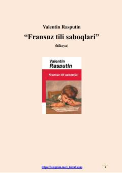

FTUrushdan keyingi qiyin davrda o'quvchi bola va uning mehribon o'qituvchisi haqidagi ta'sirli hikoya.
Urushdan keyingi og'ir yillarda tumanga o'qishga borgan o'n bir yoshli bolaning hayoti va o'qituvchisi Lidiya Mixaylovna bilan bo'lgan ta'sirli munosabatlari haqida hikoya qilinadi. Asar insoniylik, mehr-oqibat va ustozga bo'lgan chuqur hurmat tuyg'ularini tarannum etadi.